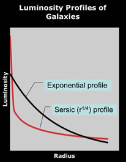
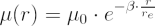
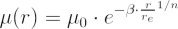

As a result of the decrease in the density of stars, the surface brightnesses of galaxies fall with increasing radius. The way in which the brightness falls is described by the surface brightness (or luminosity) profile. The two commonly observed surface brightness profiles for galaxies – the exponential and Sersic profiles – are shown in the image to the right.
Exponential galaxies have surface brightness profiles described by an equation of the form:

Where μ(r) is the surface brightness at radius r, μ0 is the central brightness, and re is the scale length.  is chosen such that one-half of the total light of the system would be emitted interior to re. The disks of spiral galaxies generally exhibit exponential surface brightness profiles.
is chosen such that one-half of the total light of the system would be emitted interior to re. The disks of spiral galaxies generally exhibit exponential surface brightness profiles.
Galaxies with Sersic profiles possess surface brightness profiles described by an equation of the form:

Where n is a number between approximately 2 and 6, and all other parameters are as above. Elliptical galaxies, and the bulges of spiral galaxies, generally exhibit Sersic surface brightness profiles with a typical n of 4. This is the famous de Vaucouleurs r1/4 profile.